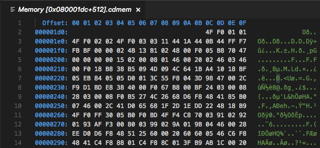

Lab 2: First Machine Code
Outline
Before you complete this lab, make sure:
- you can clone repos from git
- you can use VSCode to edit assembly (
.S) files - you can connect your discoboard to your computer and start a debugging session.
If you’re not confident about that stuff then feel free to have a look over the Lab 1 again.
In this lab you will:
- write your own first pieces of machine code
- learn about how the instructions (i.e. the program) are represented and executed on your discoboard
- learn a few assembler directives for getting data into your program
Useful references (no need to look at these just yet, we’ll step you through when you’ll need each one):
Introduction
Today you will see how to explain to your CPU that your plan is to calculate
2+2, and see how words (i.e. numbers) in memory can be formed and
interpreted as opcodes (operation codes) which will instruct your CPU to do
things (e.g. add two values).
Even though this is a “first steps” type of lab, the things you’ll do in this lab are essential for the rest of this course, so make sure you understand everything in your program what is happening in front of you. Anything you leave hanging here will probably haunt you in the coming weeks. Don’t feel like everyone else is getting it and you’re the only one that’s lost—that’s definitely not the case.
Exercise 1: 2+2
Fork & clone the lab 2 template to your machine (just like you did in Lab 1).
Your job in this first exercise is to write an assembly program which calculates
2+2 and leaves the result in register 1 (r1).
Remember from last week’s lab that you can see the values in your discoboard’s registers (assuming there’s a debugging session running and the execution is paused) in the registers pane:
You can set the numeric format for a specific register in the register view. Simply right click on the register, select “set number format” and then select the desired format. This will help you make sense of the value of a register.
ARM assembly syntax
This is probably the first time you’ve written any ARM assembly code, so for
this course we’ve prepared a cheat
sheet to help you out.
It looks pretty intimidating at first—mostly because it crams a lot of
information into a small space. So let’s pick one line of the cheat sheet—the
sub instruction—and pick it apart.
First, the syntax column:
sub{s}<c><q> {<Rd>,} <Rn>, <Rm> {,<shift>}
The first token on the line is the instruction name, and after that is the (comma-separated) argument list. Just like any other programming language, once you understand the syntax you can read and understand the code. In fact, since it’s a smaller language (there are only a couple of dozen instructions) it’s probably easier to read than languages with a richer syntax.
-
anything in braces (
{}) is optional, e.g. thesat the end ofsub{s}means that it can be eithersuborsubs -
the
<c>and<q>parts relate to the condition codes and opcode size boxes on the second page of the cheat sheet - they’re also optional and you probably won’t need them for this first exercise -
{<Rd>,}is the destination register (e.g.r3orr11), which is optional because if it’s omitted the result will be stored in the<Rn>register (which is why the semantic column saysRd(n) := ...) -
<Rn>, <Rm>are the two operands (arguments) for thesubinstruction -
finally, the optional
{,<shift>}part is related to the barrel shifter (for bit-shifting operations) built alongside the discoboard’s ALU - you don’t have to worry about this too much for the moment but it’ll come in handy later
There are a couple of other parts of the syntax which aren’t covered in the
sub instruction:
-
constant values (e.g. numbers) are written normally (e.g.
24for decimal numbers) although you can add a prefix to indicate a different base:0bfor binary (e.g.0b1101101),0ofor octal (e.g.0o125) or0xfor hexadecimal (0xef20) -
when it comes to load & store operations, square brackets
[]indicate that the instruction should use the memory address in the register, e.g.[r2]tells the discoboard to “use the memory address inr2” for that instruction
You won’t need to know all of this stuff to complete this lab, so just remember that it’s here if you need to come back to it. Let’s keep going…
The semantic column on your cheat sheet describes what the instruction does.
For example, the semantic for the sub instruction is Rd(n) := Rn -
Rm{shifted}, which in English translates to something like:
in the
Rdregister (orRn, if there are only two register operands present) store the result of subtracting the value in theRmregister (with an optional bit-shift, if present) from the value in theRnregister
You can probably see why we use assembly language for telling our CPU what to do rather than English—it’s much less wordy.
The flags column of the cheat sheet specifies which of the special condition
code flags that instruction sets if the optional s suffix is present. (We’ll
cover this in Lab 3, but if you’re curious there’s a box on the second
page of the cheat sheet which lists the flags.)
Whew, that was a bit of an information dump. But it was worth picking it apart in detail, since you’ll be looking at the cheat sheet (and ARM instruction syntax) a lot.
The task
To actually complete your “2 + 2” task, you’ll need to
- get number
2into a register - add another
2to it and put the result inr1
Look over the cheat sheet—which assembly instructions allow you to specify numeric contsants/literals in a register? There are also a number of machine instructions which will implement an addition—which one do you want, and why?
Once you’ve written a program which you think will do what you want, step
through and make sure that the value which r1 holds at the end is actually
4.
Exercise 2: reverse engineering
Now we really look under the hood and leave no bit unturned. Start a debugging
session with your program from the previous exercise and step through until you
get to main, then leave it “hanging”—do not execute any further.
Do you know where each of your “number 2”s are represented in your program when it’s actually running on your discoboard?
To do that we need to be able to view the memory in the disco board. In VSCode
you can look at your memory directly using the Memory View: type
Cortex-Debug: View Memory in the command
palette
(or some part of it—the command palette “fuzzy matches” on command names).
VSCode will then ask you to input the starting address and the number of
bytes to read (e.g. 42 bytes).

This might look overwhelming, but the 2D “grid” layout is pretty simple: the hex numbers down the left hand side are the base memory addresses, and the hex numbers along the top represent the “offset” of that particular byte from the base address. So, to work out the exact address of a particular byte (remember: 2 hex digits == 1 byte) you read along the row to get the base address, and read down the column to get the offset, and add them together (base+offset) to get the address of the byte. Simples!
You can definitely find the bytes in memory which correspond to the
instructions you wrote in your main.S file in this view. The trick is figuring
out where to look—what should the starting address be? Even your humble
discoboard has a lot of addressable memory. Discuss with your lab
neighbor—where should you look to find your program? What if I told you that
the (pc) register stood for program counter?
If you get stuck, here’s a trick which is often helpful in reverse engineering things—try and put some known values into the program so that we know what we’re looking for when we’re staring at the memory view.
There’s an assembler directive called
.hword which you
can use to put 16-bit numbers into your program (“hword” is short for half-word,
and comes from the fact that your discoboard’s CPU uses 32-bit “words”).
Modify your program to use the .hword directive to put some data into your
program.
.syntax unified
.global main
.type main, %function
main:
.hword 0xdead
.hword 0xbeef
b main
.size main, .-main
Build & upload your program and open a memory view and go to the address of your
first instruction (or a bit before—as long as the number of bytes you display
spans over the memory region you’re interested in). You might need to re-size
the different viewlets to make sure you can see all the columns of the memory
view. Can you see the 0xdead and 0xbeef values you put into your program? If
you can’t see them exactly, can you see something which looks suspiciously
like them? What do you notice?
If you try to run your program (stepping/continuing past the first initial breakpoint, in the startup_stm32l476xx.S file) it crashes — more specifically, it throws an exception and then puts the program into an endless loop so it hangs for inspection with the debugger). Why is this happening? Why doesn't the program run anymore?
Endianness
To make sense of the numbers displayed in the memory view, we need to talk about endianness.
Values are stored in memory as individual bytes (i.e. 8-bit numbers, which can be represented with two hex digits). Endianness refers to the order in which these small 8-bit bytes are arranged into larger numbers (e.g. 32-bit words). In the little-endian format, the byte stored at the lowest address is the least significant byte; where as in big-endian format, the byte stored at the lowest address is the most significant byte.
Here’s an example: suppose we have the number 0x01 stored at a lower memory
address (e.g. 0x000001e0), and the number 0xF1 stored at a higher memory
address (0x000001e1), as shown below:
Under the little-endian format, when these two 8-bit numbers are read as one
16-bit half-word number by the CPU, it represents 0xF101 (the 0x01 at the
lower address is treated as less significant). And under the big-endian
format, it represents 0x01F1 (the 0x01 at the lower address is treated as
more significant).
When reading four bytes from the memory, the CPU can read them as two 16-bit half-words, or as one 32-bit word. The endianness format applies everytime when combining bytes into bigger words. The following diagram illustrates this using the little-endian format:

You need to be aware of this byte ordering to make sense of the memory view. It might be painful and confusing at the start, but you’ll get used to it.
How might you figure out on your discoboard’s Cortex-M4 CPU whether a 32-bit instruction is read as one 32-bit word or as two 16-bit half-words? (hint: have a look at A5.1 in the ARM®v7-M Architecture Reference Manual).
According to Wikipedia, Danny Cohen introduced the terms Little-Endian and Big-Endian for byte ordering in an article from 1980. In this technical and political examination of byte ordering issues, the “endian” names were drawn from Jonathan Swift’s1 1726 satire, Gulliver’s Travels, in which civil war erupts over whether the big end or the little end of a boiled egg is the proper end to crack open, which is analogous to counting from the end that contains the most significant bit or the least significant bit.
Instruction encoding(s)
Now that you know how bytes fit together into words, let’s get back to the task of figuring out how the instructions in your program are encoded in memory.
To help, you can use the known half-words you put into your program earlier to help you out. Update your program like so to add a single instruction (i.e. one line of assembly code) from the your 2+2 program you wrote in Exercise 1.
.syntax unified
.global main
.type main, %function
main:
.hword 0xdead
@ put a single "real" assembly insruction here from your 2+2 program
.hword 0xbeef
b main
.size main, .-main
Build, upload and start a new debug session (but don’t run it, just leave it paused) then find your program again in the memory view. What does your instruction look like in memory? If it helps, try making a note of the bytes, then modify the instruction slightly (e.g. change the number, or the register you’re using) and see how the bytes change in memory (you’ll need to re-build & run your program and call the view memory command each time you do).
Discuss with your neighbour: what do you think the different bits (and bytes) in the instruction encoding mean? How does the discoboard know what to do with them? And if you’ve figured that out, why doesn’t your program actually work?
To fully make sense of these instruction encodings you need more than just your cheat sheet, you need the ARM®v7-M Architecture Reference Manual). You need to dig to the deepest levels, by going to section A7.7 Alphabetical list of ARMv7-M Thumb instructions (page A7-184). Use the bookmarks in your pdf viewer to navigate to the relevant instructions inside this huge 400 page section.
For each instruction you will see a number of encodings. They detail bit-by-bit the different ways of specifying the machine instructions that your discoboard CPU understands. You may also find this number format conversion tool helpful:
| Decimal | |
| Hex | |
| Binary |
Can you tell which specific encoding has been used? Note that not every encoding can express every version of the instruction, but sometimes a more complex encoding can also express what the a simpler form could have done as well. Can you hint the assembler towards the specific encoding you want?
Excercise 3: hand-crafted, artisinal organic instructions
Now that you’ve identified the spot in memory where your instructions live, in this exercise we turn our approach around and program the CPU by writing specific numbers directly to memory locations.
Now, instead of calculating 2+2, you are going to make the CPU calculate 3-1
by putting the right numbers into memory.
In fact, you have been doing this all along, except that the assembler has helped you in calculating those numbers. Replace your program with the following assembly code:
.syntax unified
.global main
.type main, %function
main:
.hword 0xffff
.hword 0xffff
b main
.size main, .-main
only this time instead of the 0xffffs you need to figure out the actual values
which will make the CPU load 3 into a r1 and subtract 1 from it. Remember
that it’ll be similar to the words you looked at in the memory viewer earlier,
but some of the bits will be different (since we’re dealing with -, 3 and
1 instead of +, 2 and 2).
Note the line at the bottom:
.size main, .-main
This tells the assembler the size of the main function, and it is essential
for the disassembler to work correctly. The disassembler view can be opened
by typing Cortex-Debug: View Disassembly (Function) in the command palette
during an active debug session (thus you need to first compile, upload your code
and start a debug session). It will then ask for which function to disassemble,
type the function name (e.g. main). It will look something like this:
Bring up the disassembler view for main—you’re now looking at the program as
it will be understood by the CPU. You can even do step debugging in disassembly
view; it’s automatic based on which source tab you have active2.
Looking at the disassembled code (i.e. the way the CPU will interpret the
instructions) did you see what you intended? Will your new, hand-assembled
program show the correct result in r1 after it has been run? If it doesn’t,
what might have gone wrong?
You can now cheer as loud as your upbringing allows that you will never again have to hand-craft the bits needed to instruct the CPU to do this, and you can leave this job to the assembler from now on.
As a side effect, you also learnt something about security: your system can be compromised by injecting some data into memory (an array of numbers, a string or anything which the host system would accept) and making the CPU somehow stumble into executing it. Classically this is done in form of buffer overruns in C programs (very few other languages allow that sort of thing) where you can make your program write data into places where the executable code lives… and bingo!
Discuss with your lab neighbour: after completing this exercise, how would you explain the way a CPU works to your grandma/grandpa?
Exercise 4: bit vectors
Load some new data into register r1 by adding this assembly code to your
program:
cope:
.ascii "COPE"
@ load "COPE" into r1
ldr r1, cope
loop:
nop
b loop
This code introduces a new compiler directive: labels. From the documentation:
A label is written as a symbol immediately followed by a colon `:’. The symbol then represents the current value of the active location counter, and is, for example, a suitable instruction operand. You are warned if you use the same symbol to represent two different locations: the first definition overrides any other definitions.
So in the code above there are two new labels: cope and loop. A label is a
way of attaching a human-readable name to a location in your sequence of
instructions (i.e. your program). But always remember that it’s just a location
marker, and once your program is running on your board it will have a specific
memory address which you can store in a register, do arithmetic on, etc.
What will you see in r1 after the ldr r1, cope line?
Can you guess the address of cope and find it in the memory viewer?
You’ll notice a
new .ascii
compiler directive in this code: this allows you to put data into your program
using the ASCII encoding. Fundamentally,
this is no different to the .hword directive earlier, only that instead of
using numbers (e.g. decimals like 5 or hexadecimals like 0xA2) you’re using
the ASCII character code to determine exactly what bytes the assembler puts in
your program. But it’s all just bytes in the end—as you’ll soon see.
Your goal in this exercise is to isolate and shift individual bytes within the
"COPE" word:
- first, change it into
"HOPE"and store inr2 - then, change it into
"HOPS"and store inr3
Each of these steps requires isolating and manipulating one 8-bit (1-character)
part of the 32-bit word without messing with the rest of it. As a hint, in the
ASCII character encoding you can add 5 to change a C into an H and add 14 to
change an E into an S (again, remember to look at your cheat sheet). The new
characters need to be shifted back into the correct position and then need to
replace the appropriate character in the original word.
It might be helpful to use a piece of paper here: write out what the "COPE"
data looks like in memory (remember endianness!), and figure out what shuffles
and logical operations you need to make the transformations into "HOPS". If
you’re stuck, think what bit-vector operations will remove, replace or combine
information in your registers.
There are several ways to do this, how many can you think of? Show your program to your neighbour or tutor to get ideas about how it could be done differently.
You might have used one (or more) large numbers in your bit manipulation adventures. How many bits is that number? Do you think it will fit into the instruction encoding? Have a look at the disassembly, and cross check it with the instruction manual. Can you make sense of what’s happening here? (Hint: this blog post might be helpful to you). Give it a crack, but we will revisit this again later in the course.
Finalise your program so that the main function performs the "COPE" ->
"HOPE" -> "HOPS" transformation and leaves the "HOPS" value in r2.
Summary
Congratulations! In this week’s lab you learned how to
- watch what happens in memory as your program executes
- use the
.hwordand.asciiassembler directives to insert bytes into your programs - figure out the exact sequence of bits to get the discoboard to do what you want
- use simple bit-shifting instructions to isolate and manipulate specific bits in a word
- read and write numbers in different bases: decimal, binary, hex
Next lab, you’ll start taking this information to construct (and play!) a simple game.
Make sure you pack up your board and USB cable, and adapter (if needed) carefully.